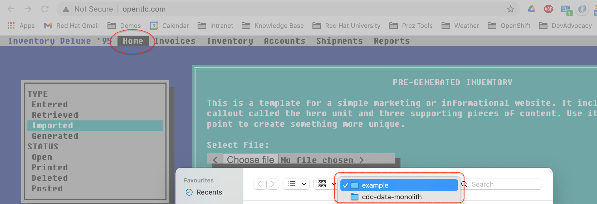
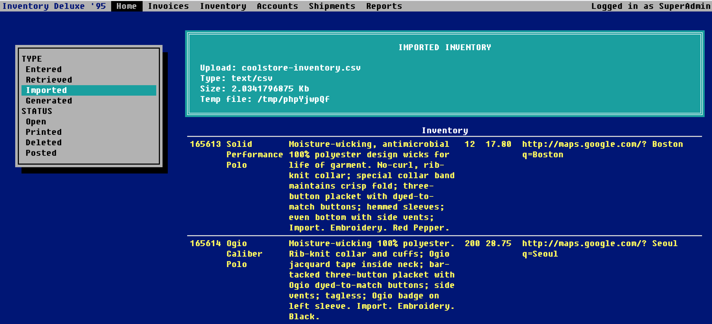
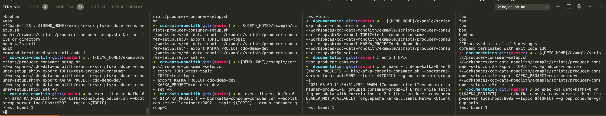
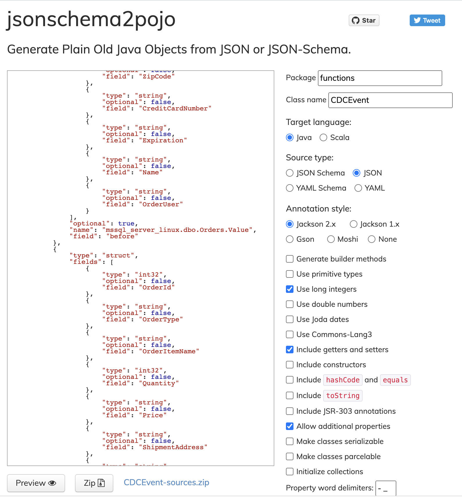

Demo Walkthrough
Introduction to Legacy Application
-
Show the coolstore without the inventory. You can get the URL of the coolstore UI by running the following command
COOLSTORE_URL=http://$(oc get route coolstore-ui -o jsonpath='{.spec.host}' -n cdc-coolstore) -
Explain that the inventory comes from another system. A legacy system.
-
Navigate to the legacy system. You can get the URL to the legacy application by running the following command in the demo shell:
LEGACY_URL=http://$(oc get route www -o jsonpath='{.spec.host}' -n ${PROJECT_PREFIX}-dev) -
Show that the inventory database is currently empty by clicking on the "Inventory" navbar

-
Show that the legacy system accepts an upload of inventory data by clicking on the
Homenavbar element -
Next click on
Choose filebutton which should open up a window like so: -
In the directory shown (
$DEMO_HOME/example) choose the `coolstore-inventory.csv' -
Click
Load File -
You should now see a screen of all the imported inventory.
Keep this tab open as we will revisit this page later

-
Reopen the
$COOLSTORE_URLand notice that inventory has not been updated still
Kafka: Producers, Consumers, and Groups
In this demo we want to show the notion of producers and consumers and ideally topics without any of the k8 overlays
See here for some commands that can be used.
For this we setup 4 terminals.
-
All four get setup in the same way. Run the following command first in each:
# from the root of this repo docker run -it -v ~/.kube:/home/jboss/.kube -v ~/.oh-my-zsh:/home/jboss/.oh-my-zsh -v $(pwd):/workspaces/cdc-data-monolith -w /workspaces/cdc-data-monolith quay.io/mhildenb/cdc-demo-shell /bin/zsh -
Once in the docker shell, ensure you are logged in (one you are logged into one you should be logged into all)
oc whoamiopentlc-mgr -
Next run the following command to setup your environment
. ${DEMO_HOME}/example/scripts/producer-consumer-setup.shTerminal one is for producing information on a topic. Run the following command to get started
oc exec -it demo-kafka-0 -n ${KAFKA_PROJECT} -- bin/kafka-console-producer.sh --bootstrap-server localhost:9092 --topic ${TOPIC}The terminal is ready to take input on the topic when you see the chevron ( >)Terminal 2 will be our first consumer in the group
consumer-group-1Run the following command to get it started:
oc exec -it demo-kafka-0 -n ${KAFKA_PROJECT} -- bin/kafka-console-consumer.sh --bootstrap-server localhost:9092 --topic ${TOPIC} --group consumer-group-1Terminal 3 will be our second consumer in the group
consumer-group-1Run the following command to get it started:
oc exec -it demo-kafka-0 -n ${KAFKA_PROJECT} -- bin/kafka-console-consumer.sh --bootstrap-server localhost:9092 --topic ${TOPIC} --group consumer-group-1Terminal 4 will be our first consumer in the group
consumer-group-soloRun the following command to get it started:
oc exec -it demo-kafka-0 -n ${KAFKA_PROJECT} -- bin/kafka-console-consumer.sh --bootstrap-server localhost:9092 --topic ${TOPIC} --group consumer-group-solo -
Enter the following
-
You should notice output in one of Terminal 2 or 3 and Terminal 4
 -
Enter the following
-
You should notice output in the same of Terminal 2 and 3 that received the event before and Terminal 4
-
Next kill the consumer in either Terminal 2 or 3, whichever one got the previous two events, with ctrl+c
-
Enter the following
-
This time the other terminal of
consumer-group-1should get the message as should Terminal 4 -
Now kill the consumer in Terminal 4 with ctrl+c
-
Enter the following:
-
You should only see the event appear in the remaining connected terminal
-
Finally, let’s see how the consumer groups have gone. Let’s use the
kafka-consumer-groupscommand to see:oc exec -it demo-kafka-0 -n ${KAFKA_PROJECT} -- bin/kafka-consumer-groups.sh --bootstrap-server localhost:9092 --describe --group consumer-group-solo oc exec -it demo-kafka-0 -n ${KAFKA_PROJECT} -- bin/kafka-consumer-groups.sh --bootstrap-server localhost:9092 --describe --group consumer-group-1 -
Output should be similar to:
Consumer group 'consumer-group-solo' has no active members. GROUP TOPIC PARTITION CURRENT-OFFSET LOG-END-OFFSET LAG CONSUMER-ID HOST CLIENT-ID consumer-group-solo test-producer-consumer 0 16 17 1 - - -GROUP TOPIC PARTITION CURRENT-OFFSET LOG-END-OFFSET LAG CONSUMER-ID HOST CLIENT-ID consumer-group-1 test-producer-consumer 0 17 17 0 consumer-consumer-group-1-1-c2d8588c-996e-47df-bb46-66d948d4a9ea /10.128.2.16 consumer-consumer-group-1-1 -
Next, let’s reset the offset of the only consumer group that is currently offline (has no active members)
-
Finally, let’s restart a consumer of the
consumer-group-solo -
After a few seconds you should see the following output
-
Which shows that our offset has been reset to the start causing us to reread the events
Enable Debezium Connector
Configure SQL Database
See last part of ansible/demo/templates/configmap-data-sql.yaml.j2 and instructions here
Demonstrate Debezium
-
Connect to database using Adminer per instructions here
-
In another terminal watch where the order events will go
oc exec -it demo-kafka-0 -- bin/kafka-console-consumer.sh --bootstrap-server localhost:9092 --topic mssql-server-linux.dbo.Orders --from-beginning -
Go to adminer and create a new entry
Generate legacy-order-adaptor
Create JSON to POJO
-
Start with some example
.jsongenerated from CDC event in this section -
Navigate to this site and paste in the json per screenshot
 -
Click the link to download the zip file
-
expand into the
functionsdirectory -
Update tests to show JSON to POJO working